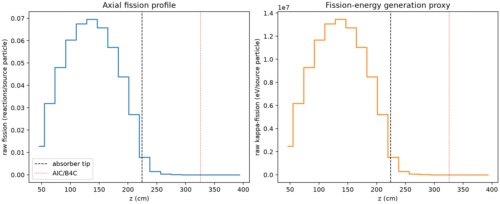
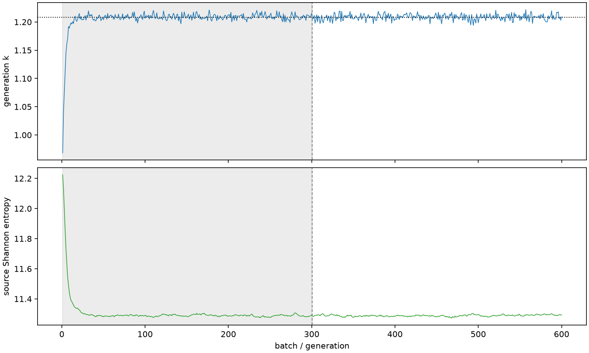

| field | value |
|---|---|
| experiment | V2-ADAPTIVE_01-0024 |
| k | 1.2082362772348125 |
| MC standard error | 0.00018279731600563242 |
| seconds | 1056.0954277570127 |
| acceptance | not_assessed |
| convergence | review_required |
Completed is output integrity only; physical and statistical review required. Zero tallies do not prove zero production or zero uncertainty.
| diagnostic | value |
|---|---|
| geometric fuel voxels | 5280 |
| zero fission tally voxels | 744 |
| low signal fuel voxels | 1616 |
| low signal fission share | 6.038150157623789e-05 |
| low signal kappa share | 6.0409420151266585e-05 |
| important fission share | 0.9501448628951153 |
| previous filter included | 3664 |
| duration estimate s | 1562.5173488400023 |
| actual minus estimate s | -506.4219210829897 |
| fission relative MC error | statistics |
|---|---|
| all_geometric_fuel | {"voxels": 5280, "positive_mean_voxels": 4536, "zero_mean_voxels": 744, "undefined_relative_error_voxels": 744, "median": 0.009883882282990485, "p95": 0.8099810592658317, "maximum": 1.0000000000000002} |
| low_signal | {"voxels": 1616, "positive_mean_voxels": 872, "zero_mean_voxels": 744, "undefined_relative_error_voxels": 744, "median": 0.5727157701944283, "p95": 1.0, "maximum": 1.0000000000000002} |
| important_95pct | {"voxels": 2355, "positive_mean_voxels": 2355, "zero_mean_voxels": 0, "undefined_relative_error_voxels": 0, "median": 0.006809652759369551, "p95": 0.00977078937890804, "maximum": 0.0122519699185332} |
| outside_previous_filter | {"voxels": 1616, "positive_mean_voxels": 872, "zero_mean_voxels": 744, "undefined_relative_error_voxels": 744, "median": 0.5727157701944283, "p95": 1.0, "maximum": 1.0000000000000002} |
| kappa_fission relative MC error | statistics |
|---|---|
| all_geometric_fuel | {"voxels": 5280, "positive_mean_voxels": 4536, "zero_mean_voxels": 744, "undefined_relative_error_voxels": 744, "median": 0.009873494107918492, "p95": 0.8084755050426697, "maximum": 1.0000000000000002} |
| low_signal | {"voxels": 1616, "positive_mean_voxels": 872, "zero_mean_voxels": 744, "undefined_relative_error_voxels": 744, "median": 0.5718427660411616, "p95": 1.0, "maximum": 1.0000000000000002} |
| important_95pct | {"voxels": 2355, "positive_mean_voxels": 2355, "zero_mean_voxels": 0, "undefined_relative_error_voxels": 0, "median": 0.0068030295256276616, "p95": 0.009761404163954148, "maximum": 0.012236825320584305} |
| outside_previous_filter | {"voxels": 1616, "positive_mean_voxels": 872, "zero_mean_voxels": 744, "undefined_relative_error_voxels": 744, "median": 0.5718427660411616, "p95": 1.0, "maximum": 1.0000000000000002} |
| axial bin | fission share | kappa-fission share |
|---|---|---|
| 1 | 0.025963322086890093 | 0.025964401016701052 |
| 2 | 0.06470869042442205 | 0.06470832405437217 |
| 3 | 0.09729695705815572 | 0.09729637979309416 |
| 4 | 0.12215065559472496 | 0.12215000252167971 |
| 5 | 0.13692634692291664 | 0.13692535397317 |
| 6 | 0.14083202689434585 | 0.1408311315280053 |
| 7 | 0.13332605072254114 | 0.13332541177967228 |
| 8 | 0.11557475575446578 | 0.11557399691102589 |
| 9 | 0.08886510140420965 | 0.08886438836356993 |
| 10 | 0.05456308079902676 | 0.05456284440622399 |
| 11 | 0.015952443692059923 | 0.015955620685200223 |
| 12 | 0.0029860649311613846 | 0.0029872832664710517 |
| 13 | 0.0006699354728237438 | 0.0006702110824887892 |
| 14 | 0.00014067398624292927 | 0.00014073714455492515 |
| 15 | 3.377678387427329e-05 | 3.379234284329012e-05 |
| 16 | 8.710992610969828e-06 | 8.713734120831571e-06 |
| 17 | 1.213705707047658e-06 | 1.2147058333284837e-06 |
| 18 | 1.9277382103513854e-07 | 1.9269097292917687e-07 |
| 19 | 0.0 | 0.0 |
| 20 | 0.0 | 0.0 |
Histories include the inactive-to-active transition at batch 300. kappa-fission approximates fission energy production, not total heat deposition.

